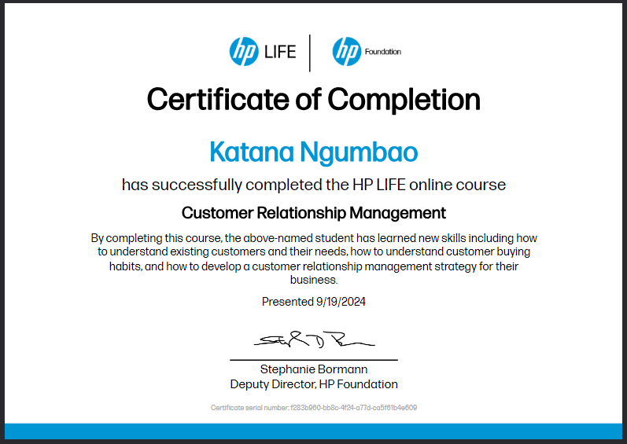
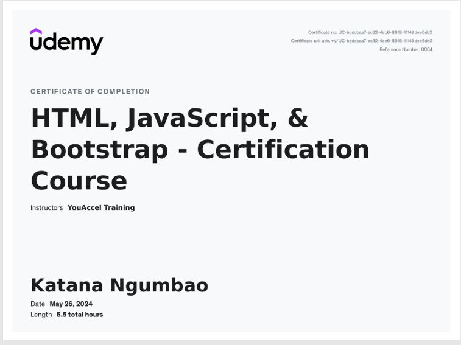

Software Development Bootcamp
Power Learn Project Academy
May – October 2024

I’m Katana Ngumbao, a Developer, Virtual Assistant, and Cybersecurity Enthusiast who helps startups do more with less. I take the busywork off your plate, build clean and reliable software, and make sure security is part of the plan from day one.
As the founder of KataStrike Intelligence, a cyber safety advocacy platform, I actively research emerging threats and translate complex security concepts into simple, actionable insights.
Clients value my clear communication, continuous drive to master new technologies, and my knack for turning complicated ideas into maintainable solutions. Let’s turn your goals into something that works, scales, and stays protected.
KataStrike Intelligence
Founded a cybersecurity awareness and digital safety brand: building a go-to-market strategy, a content library and a structured 12-week awareness program, and positioning it for future partnerships and staff training.
SmartDuo Assist
Co-founded a virtual assistant support brand where a team delivers VA services together under one brand, and delivered well-structured software solutions for the venture.
Power Learn Project Academy
Completed the software development program and collaborated with a project group on technical challenges, turning complicated ideas into simple, maintainable solutions.
Power Learn Project Academy
May – October 2024
.png)
ALX Africa
August – October 2024

HP Foundation Program
September 2024

Udemy
May 2024


Have a project in mind? Let’s talk about it.